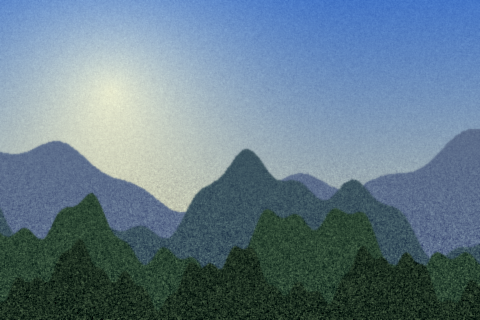
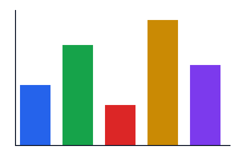

Photos, charts and transparency
WebP (VP8), opaque

PNG, opaque
JPEG

WebP (VP8L), a chart
WebP with alpha
AVIF
filter: grayscale(1)
CMYK JPEG without a profile
 JPEGJPEG
JPEGJPEG AVIF
AVIF CMYK JPEG without a profile
CMYK JPEG without a profile